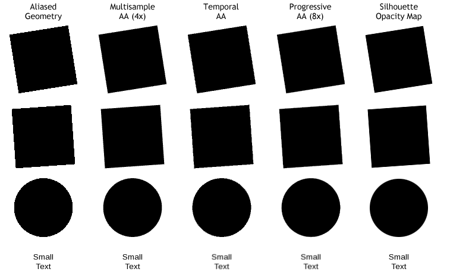
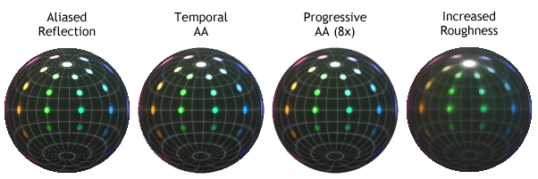

Anti-Aliasing
Qt Quick 3D has multiple ways to combat aliasing (the jagged edges) while rendering 3D models. Each technique offers its own benefits and limitations. Multiple techniques can be combined, but with additional performance cost.
Causes of Aliasing
Although aliasing is a useful tool in rendering graphics, it could affect performance of your application if not used wisely. The following sections summarize the different aliasing techniques to choose from. Understanding which technology best targets your problems will help balance visual quality with sufficient rendering speed.
Geometry Aliasing
By default, all geometry is rendered one on-screen pixel at a time. As you can see on the left in the image below, this leaves harsh edges that may be easily noticeable in high-contrast cases (most noticeably in this black-and-white case).

Effective techniques for reducing aliasing for geometry
The most correct fix for this is to use Multisample Anti-Aliasing, as it gathers more geometric detail only as needed. Using Temporal Anti-Aliasing or Progressive Anti-Aliasing can also mitigate the issue in a correct manner.
Finally, in certain cases you can use a silhouette opacity map to smooth the edges of selected geometry.
Texture Aliasing
When a texture is sub-sampled, fewer pixels than in the original are displayed, resulting in undesirable artifacts based on which pixels are chosen. This effect is worsened when the model is moving, as different pixels are chosen at different times. In the image below, notice how the line between E3 and F3 is missing, strongly present between G3 and H3, then gone for the next 5 columns, and so on.

Effective techniques for reducing aliasing for textures
The simplest (and arguably the best) fix for this problem is to use mipmapping in the image texture itself. Alternative fixes include using either Temporal AA or Progressive AA to gather more information from the texture.
Using Multisample Anti-Aliasing will not fix this problem.
Reflection Aliasing
Similar to l{Texture Aliasing}, a material reflecting the environment will sub-sample the image. In some cases, as seen on the left in the image below, becomes obvious when fine details are being skipped.

Effective techniques for reducing aliasing for reflections
The most correct solution in this case is using Temporal AA or Progressive AA to find the extra information.
A simple alternative solution that may be acceptable is to make the material less glossy, more rough. In this case lower-resolution mipmaps of the environment are automatically used, blending the sharp details together.
Anti-Aliasing Techniques
Aliasing is caused when there is more information present in the original than we can represent in the pixels on screen. Anti-aliasing techniques fall into three categories:
- Techniques that find additional information for a single pixel and represent them all at the same time.
- Image effects that attempt to find where things look bad and sweep the problems under the carpet.
- Techniques employed by artists that attempt to workaround the limitations.
Techniques that find additional information
Multisample Anti-Aliasing
Multisample AA (MSAA) operates on an entire layer. The edges of geometry are super-sampled, resulting in smoother silhouettes. This technique has no effect on the materials inside geometry, however.
- Pros: Good results on geometry silhouettes, where aliasing is often most noticeable. Works with fast animation without an issue.
- Cons: Can be expensive to use. Does not help with texture or reflection issues.
Temporal Anti-Aliasing
Temporal AA operates on an entire layer. The camera is jiggled very slightly between frames, and the result of each new frame is blended with the previous frame.
- Pros: Due to the jiggling camera it finds real details that were otherwise lost. Low impact on performance.
- Cons: Fast-moving objects cause one-frame ghosting.
Progressive Anti-Aliasing
Progressive AA (PAA) operates on an entire layer. When all content of the layer has stopped moving, the camera is jiggled very slightly between frames, and the result of each new frame is blended with the previous frames. The more frames you accumulate, better looking the result.
- Pros: Provides detailed static images with no performance cost.
- Cons: Does not take effect if any visual changes are occurring. 8x PAA takes one eighth of a second to finish rendering (at 60fps), which may be noticeable.
Mipmaps
Mipmapping stores the texture along with its pre-calculated lower resolution versions. Whenever the texture is being displayed at a smaller size, the rendering system automatically uses these low-resolution images (which combine many details into a single pixel) blending them into the result as needed.
- Pros: Very low performance impact. Greatly improves image quality for textures. Encourages you to use compressed textures, which load and render faster than uncompressed imnages.
- Cons: Requires using external tools to optimize your images. Uses 33% more graphics memory than the same image without mipmaps.
Supersample Anti-Aliasing
Supersample AA (SSAA) operates on an entire layer, or even multiple layers. It is not mentioned or compared above because the performance penalty can be severe, and because it requires additional work from the artist. This technique should be used as a last resort.
- Pros: Provides full-scene anti-aliasing with no limitations on animation.
- Cons: Can severely degrade performance when your scene is already limited by the fill-rate of the graphics system, which is often the case.
Artist-Employed Cheats
Silhouette Opacity Maps
When your model has a consistent silhouette, you can apply an opacity map that makes the outer edge of the geometry transparent. Using a gradient for the opacity will let the edge of the object smoothly disappear. However, even if your opacity map transitions directly from fully-opaque to fully-transparent over the space of one pixel, the result will still provide anti-aliased edges as seen in the example above. This is because image maps, including opacity maps, use bilinear interpolation.
- Pros: Can show softer transitions than normal AA. Can be applied per model instead of per-layer.
- Cons: Cannot be used if the silhouette of the object will ever change. Multiple overlapping models that employ transparency consume fill rate performance, which is often at a premium.
Modifying Materials or Geometry
As demonstrated in the image for Reflection Aliasing above, sometimes the simplest fix for problems is to change the artwork. If you are getting distracting specular glints on the corner of your model, ask yourself: Can I make the material softer? Can I modify the geometry to smooth or change the reflection angle? Can I edit the environment map to reduce sharp transitions?